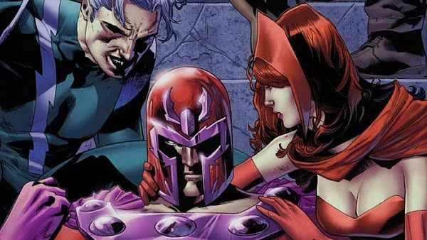

A Feiticeira Escarlate é retratada por Elizabeth Olsen no Universo Cinematográfico da Marvel. Como os quadrinhos desde 2015, a versão do UCM de Wanda é uma mulher nascida com um talento para a magia que mais tarde teve esse poder aprimorado por meio de experimentação científica.
Feiticeira Escarlate (Scarlet Witch no original) é uma super-heroína que aparece nos quadrinhos americanos publicados pela Marvel Comics. A personagem foi criada pelo roteirista Stan Lee e pelo desenhista Jack Kirby.
Sua primeira aparição foi em "X-Men" # 4 (março de 1964) na Era de prata das histórias em quadrinhos americanas.
Dizia originalmente que tinha a capacidade de alterar a probabilidade, a Feiticeira Escarlate foi retratada como uma feiticeira poderosa desde os anos 1980 e mais tarde foi considerada poderosa o suficiente para alterar a realidade.
Na maior parte de sua história em quadrinhos, ela é retratada como uma mutante, um membro de uma subespécie fictícia de humanos nascidos com um "gene X" que concede habilidades e características sobre-humanas, mas no Universo Cinematográfico da Marvel, a Marvel revisou suas características sobre-humanas sendo magia natural amplificada por uma experimentação de Hidra quando ela era criança.
A Feiticeira Escarlate é retratada pela primeira vez como uma supervilã relutante junto com seu irmão gêmeo Pietro Maximoff (Mercúrio), ambos membros fundadores da Irmandade dos Mutantes. Um ano após sua estréia, ela se juntou à equipe de super-heróis dos Vingadores e, desde então, tem sido frequentemente retratada como um membro regular dessa equipe ou de equipes relacionadas (como os Vingadores da Costa Oeste e a Força Tarefa). Em 1975, ela se casou com seu companheiro de equipe androide Visão, mais tarde usando forças mágicas emprestadas para engravidar, resultando em filhos gêmeos William ("Billy") e Thomas. As histórias em 1989 eliminaram Thomas e Billy da existência (eles reapareceriam mais tarde como os heróis chamados Wiccano e Célere) e removeram as emoções de Visão, levando à anulação do casamento dele e de Wanda.
A história de fundo e parentesco do personagem no universo mudou mais de uma vez. Durante a década de 1960, ela e Mercúrio seriam filhos gêmeos mutantes de dois pais humanos romenos, Django e Marya Maximoff. Mais tarde, diz-se que as crianças foram adotadas, dadas aos Maximoffs pelo geneticista chamado Alto Evolucionário, deixando um mistério a sua verdadeira parentesco. Em 1974, foi que seus pais são os heróis da Era de ouro das histórias em quadrinhos americanas, Bob Frank (Whizzer) e Madeline Joyce Frank (Miss América). Wanda então se refere a si mesma como Wanda Frank por um tempo. Em 1982, Magneto conclui que é o pai de Wanda e Pietro. Em 2014, o crossover "AXIS" revelou que Pietro e Wanda não eram parentes de Magneto. Em 2015, os gêmeos descobrem que não são mutantes e seus traços sobre-humanos são o resultado dos experimentos do Alto Evolucionário. A série "Scarlet Witch Vol. 2" (2015-2017) revela que os pais adotivos de Wanda e Pietro, Django e Marya Maximoff, são biologicamente seus tios. Sua verdadeira mãe é confirmada como Natalya Maximoff, a Feiticeira Escarlate anterior, cujo pai era o Mago Escarlate.
Junto com a estrela de duas séries limitadas autointituladas de sua autoria, a personagem aparece em filmes animados, séries de televisão, videogames, bem como outros produtos relacionados à Marvel. Wanda Maximoff / A Feiticeira Escarlate é retratada por Elizabeth Olsen no Universo Cinematográfico da Marvel. Como os quadrinhos desde 2015, a versão do UCM de Wanda é uma mulher nascida com um talento para a magia que mais tarde teve esse poder aprimorado por meio de experimentação científica. Olsen aparece como Wanda nos filmes Captain America: The Winter Soldier (2014) (cena final dos créditos), Avengers: Age of Ultron (2015), Captain America: Civil War (2016), Avengers: Infinity War (2018), Avengers: Endgame (2019) e o futuro Doctor Strange in the Multiverse of Madness (2022), e é um personagem principal da série WandaVision (2021) do Disney +.
Wanda Maximoff foi sequestrada da Sérvia e trazida para a Montanha Wundagore,base do Alto Evolucionário.
Durante anos, ela e seu irmão gêmeo, Pietro, acreditavam que eram filhos do casal de ciganos, Django e Marya Maximoff.
O Alto Evolucionário supostamente sequestrou os gêmeos quando eram bebês, experimentou-os e, depois de se assustar com os resultados, os devolveu a Wundagore, disfarçados de mutantes comuns.
Como adolescentes, Wanda e Pietro descobriram que tinham habilidades sobre-humanas incomuns.
Quando Django começou a roubar comida para alimentar sua família faminta, aldeões enfurecidos atacaram o acampamento cigano.
Usando sua velocidade fenomenal, Pietro fugiu do local com sua irmã.
As circunstâncias da separação dos dois de sua família eram tão traumáticas que somente na idade adulta eles puderam se lembrar de qualquer coisa, exceto os melhores detalhes de sua infância.
Nos próximos anos, Wanda e Pietro perambularam pela Europa Central, vivendo da terra.
A Feiticeira Escarlate é uma humana aprimorada. Inicialmente, seu poder era a manipulação de probabilidades, criando eventos surreais que não tinham muitas chances de acontecer sozinhos. Ela é capaz de desviar objetos e ataques, gerar combustão instantânea ou enferrujar metais, além de outros eventos improváveis; com isso, ela pode alterar a realidade atual de tudo o que se passa e que ela pode ver. Mais tarde, seus poderes evoluíram para níveis catastróficos, quando Wanda demonstrou-se capaz de controlar a Energia do Caos (uma das formas mais poderosas de energia) através da Magia do Caos, que ela pode usar para ignorar as leis da física e do espaço-tempo, além de ter sido uma fonte de poder que ela utilizou para alterar toda a realidade, como fez na Dinastia M. Wanda é tão poderosa que é capaz de ressuscitar os mortos, como fez com seu irmão Pietro e Magnum; pode apagar seres da existência ou criar seres a partir do nada (como fez com seus respectivos filhos); além de ser capaz de roubar pedaços da alma de Mephisto, o lorde supremo do submundo. Durante o evento da Cruzada da Inocência, é dito que seu poder é capaz de feitos infinitos e inimagináveis, tanto que Dr. Destino cobiçou tal poder. Além disso, ela também possui ensinamentos da Magia de nível Ômega avançado, ensinados por Dr. Estranho e sua tutora Agatha Harkness, sendo capaz de levitar, teletransportar-se, gerar campos de força, canalizar sua energia para provocar explosões, manipular mentes de várias pessoas, prever acontecimentos próximos (precognição), criar seres sobrenaturais, entre várias outras habilidades, dando-lhe um leque de poderes inimagináveis aos seus feitiços altamente poderosos.
